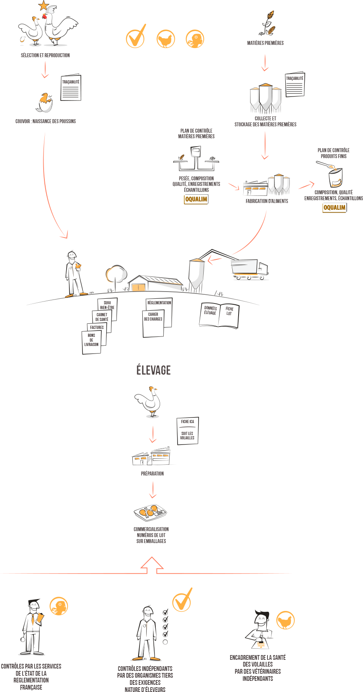

01
LA TRAÇABILITÉ ET LE CONTRÔLE
LA TRAÇABILITÉ ET LE CONTRÔLE
À CHAQUE ÉTAPE DE LA FILIÈRE
Un numéro de lot est attribué pour retracer l’historique de chaque produit depuis l’œuf jusqu’à l’assiette. Outre le contrôle du respect de la réglementation dans l’ensemble des étapes de fabrication par les services de l’Etat, le respect de l’application des engagements Nature d’Eleveurs est contrôlé par des organismes indépendants et la santé des animaux est encadrée par des vétérinaires indépendants.
